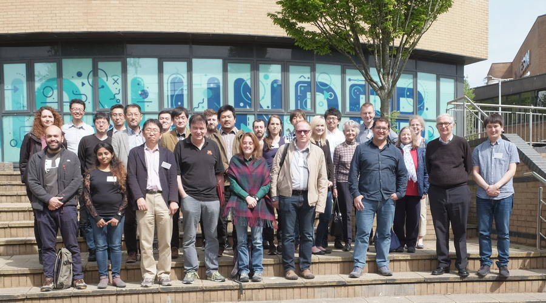

| |
|
|
UK-Japan Workshop onAnalysis of Nonlinear Partial Differential Equations16-18 May 2018
Mathematics Department,
Swansea University
|
|
|
The aim of the workshop is to bring to Swansea a group of leading Japanese and UK nonlinear PDE experts for an exchange of ideas,
with the aim of building world-leading research collaborations.
Japan has a longstanding tradition of first-class research in the fundamental analysis of nonlinear PDE and their applications,
with particular strength in PDE arising in models from biology and materials science.
The proposed event is intended as a springboard to launch new and lasting UK-Japan links.
The research topics of the workshop will focus around two closely interconnected themes:
The meeting is supported by the London Mathematical Society via Conference Grants - Scheme 1.
The meeting is open to all and will provide an opportunity for established as well as early career researchers to present their recent results.
Limited funds are available to contribute to expenses of UK postgraduate students, see Registration page for more details.
|
|

Download the full size picture here (1.6 MB)
| |

|
|
{kind=link}